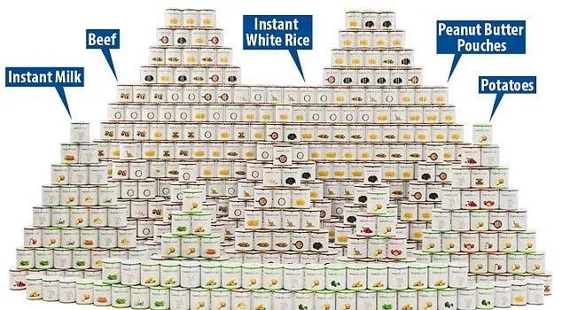
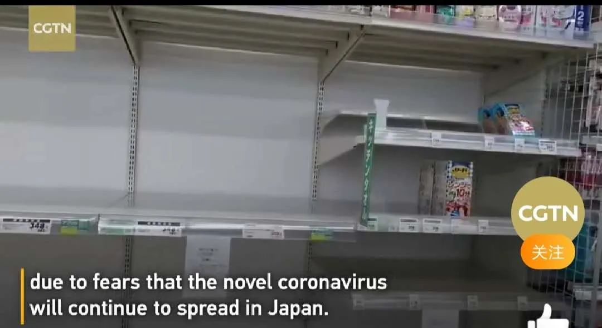

疫中北京，只有暴雪如期而至丨单读
原文链接 备份链接 受疫情影响，今年春节很多人没有办法回到家乡，只能独自留在工作的城市中。今天的来信者就是其中一位，疫情爆发之后她一直独自留在北京。往日的正常生活仍然没有露出回归的迹象，只有一场暴雪如期而至。 真正要生活的人必然得是坚韧 …

点击上方物质生活参考加星标！
物质生活参考

作者：赵小薇
来源：物质生活参考（ID：wzshck）
01.
回到北京第一天，王萌从药箱、抽屉、储藏柜里翻出了四十多个口罩，包括两包一次性口罩、一包一次性医用外科口罩，以及几个高级货：n95。
N95是前两年雾霾严重时特意买的，其他的口罩，则是以往买药的“凑单品”。跟生活在这个城市中的很多年轻人一样，王萌的家庭用药几乎全部来自外卖中的医药频道或是送药app。这类采购一般会有设置起送门槛，更多的时候，王萌是为了凑够满50减20一类的促销活动。
没人能想到，彼时低价的凑单品，在这个冬天，成了一罩难求的硬通货。
王萌至今也没再买过口罩。确切地说，是没再买到过。她前后在网上下过七八笔订单，各个购物平台都有，微博上信任的博主代购也试过，但最后不是被退款，就是直到现在还没有发货动静。
她庆幸自己无意之中囤积了求生必需品，但也后悔节前没有支持家人年前多买些口罩的决定。“当时药店里已经有人十包十包地买，我还跟劝阻我妈，说不要囤货，留给更需要的人用。”王萌说，那时候疫情并不严重，一是觉得疫区人民更需要，二是很乐观地认为，春节后产能一上来，口罩自然够用。
为了给自己的盲目乐观“赎罪”，她给爸妈寄去了自己手里的一多半口罩。
除了口罩，王萌还在柜子里翻出了三小瓶75%的酒精，两盒一次性手套，两瓶84消毒液，一小包酒精棉片。酒精是某次挤伤趾甲上药前消毒用的，药店一小瓶10块，网购6小瓶19；一次性手套则是当年对烘焙热爱的见证。

热爱囤积的习性在网上被称为“仓鼠症”，大概是因为这种动物两腮滚滚适宜储存食物，德语中，“存储”一词即为“仓鼠”。作为独自生活在大城市的单身女性，王萌对自己的“仓鼠”本性有着清晰认识。
一方面，囤货是出于安全感需要，生活必需品她总要多买一份，以备不时之需；另一方面，她有些宿命地将其归结于金牛座特质，满减活动、第二件0元、买三免一等等促销手段激发的是她的购物欲也是征服欲，意图精打细算与商家一决高下的代价，就是囤货越来越多。
这个冬天到来之时，正是双十一、双十二两轮重要周期性战役。因此，家里的洗衣液、消毒液、卫生纸甚至米面粮油，都处于饱和状态。
在北京这个物资相对齐备、配送比较迅速的城市，这样的囤积原本不觉必要，但小区封闭、快递不能进入后，从大门口手提肩扛再爬上楼的操作，让采购生活物资的难度直线上升。
“我的命都是‘仓鼠症’给的。”真正意义上地死宅在家一个月后，王萌说。
02.
在收藏了朋友圈一份“末日生存指南”的家用物资储备清单后，李晓感叹：多年“断舍离”功力一朝被废。
她是极简生活推崇者。购物理性克制，收纳井井有条，每季度对家中物品进行清理和归纳。因此，虽然家中有一只猫和一个热爱买书和零食的老公，目之所及，大环境依旧空旷干净。
与许多“断舍离”拥趸者一样，李晓的入门书籍是山下英子的《断舍离》，以及近藤麻理惠的《怦然心动的人生整理魔法》，前者讲理念，后者讲实践。在坚持了三年之后，李晓觉得生活很清爽，购物欲望也极大降低，“特别适合消费降级后的生活”。

李晓也承认，对极简与“断舍离”的推崇，一部分源于自己对生活的控制欲，要想所有物品分类清晰、摆放有序，就必须控制数量；另一部分则是蜗居的残酷现实。每当与老公因要不要扔、要不要买发生争执，她都会举出寸土寸金的离谱房价作为论据：我们差的是买东西的钱吗？你要算算它要占多少空间——空间就是钱！
但她没想这一次会折戟沙场。首先出问题的是猫。年前她家里还存有三袋猫砂，这基本是她存储的极限值。没想到挨到2月，猫砂眼看着见底，但快递还是送不到小区。最终，李晓在网上超市下了单，选了一个坐地铁要一小时车程的快递总站，四天后冒着巨大风险出了门。
一袋猫砂六斤，李晓两口子拖回家六包。经此一役，她感到身心备受打击，甚至动了“训练狸花猫用马桶”的心思。另一重打击是，在给父母采购生活用品时，一贯靠谱京东居然淀粉缺货，淘宝下单后，足足等了两周才收到货。
还有人完全出不了门。李晓闺蜜小安的父母都在湖北荆州，一度面临断菜。最终让老两口挨过最艰难一段的，是囤积在橱柜里的木耳、花菇、黄花菜、红薯粉……
李晓有点儿后怕：换成自己这个小家，极端情况下估计最多只能坚持一周。在收藏了家用物资储备清单后，她按照单子开始了采购计划：净水片、大容量充电宝、医疗箱、工具箱……
她甚至在网上找到了美国Costco销售的 “世界末日食品包”，食品包包括各种冻干，脱水和即食食品，保质期在25到30年之间。当然，价格也很可观：一年份的高级套装要6000美元。

从一个极端到另一个极端，在李晓看来，精神内核是一样的：缺乏安全感，希望更牢靠地掌控生活。
“‘断舍离’是要有社会整体保障作基础的，比如外卖、网购、交通都很便利，个人资金储备相对充足，才可能放心去舍弃。“她说，这个冬天让她感到生活背景设定相对还很脆弱，看似便利的一切，似乎也都不那么稳妥。
03.
知乎上最近一个问题很火：这次疫情之后，你还会“断舍离”吗？
大声呼喊“绝不”的人，大多是刚吃了亏的入门级选手。悲催故事多有相似：在不久前某次心血来潮的断舍离当中，扔掉了口罩、手套、酒精、旧雨衣，或是临期的零食、大米、玉米油，还有人哭诉，春节前刚刚扔掉近视手术后医生给的护目镜，“以为一辈子都用不上了！”
尽管有些口罩确实是因为过了保质期才被舍弃，但在这个口罩奇缺的时期，即便是过期了一段时间，也绝对要比裸奔上阵更安全。因此，当“断舍离”派人士略带讥讽地表示“那些爱囤货的人也不囤口罩”时，一些从角落里翻出了航空公司赠品口罩的囤积派人士，严正提出了抗议。
还有人举出去年近藤麻理惠卖货事件，这位写出《怦然心动的人生整理魔法》的“断舍离”达人，因在个人网站上高价售卖生活用品而饱受诟病，“让我们扔掉‘不心动’的东西，就是为了买她的货吗？”网友对她本人的质疑，一度上升到对“断舍离”合理性的怀疑之上。[1]
而在“断舍离”理念的发源地日本，在“生活用纸将要紧缺”的谣言影响下，多地已经出现抢卫生纸风波。[2]

大本营面临沦陷，但仍有人奋力高举“断舍离”大旗。柳南是其中之一。在他看来，误解源自国人对断舍离内涵的误读。“‘断舍离’并不是单纯的‘扔扔扔’”，柳南说，比起无目的无原则的扔，‘断舍离’的动作更为精准有目的：“断绝不需要的东西，舍弃多余的废物，脱离对物品的执着”。
因此，怎么界定“不需要”和“多余”，才是问题的关键所在。在这个维度上，疫情之下，许多人都完成了对不必要生活的生动实践：饭局被舍弃，酒局被舍弃，聚会被舍弃，不必要的寒暄被舍弃，如今居家办公的柳南觉得，除了更轻松，人生似乎也没有什么不同。
还有人借此机会进一步舍弃了朋友圈里的一些存在，“疫情就是试金石”，柳南说，“你以为自己早就清理干净了，但总有人会跳出来，花样挑战你的忍耐底线。”
他甚至借机退掉了几个群，微信首页小红圈瞬间清爽。“处理物品时还可以带一点惜物之心，但对于三观不合的人，‘断舍离’绝不能手软。”这位高段位“断舍离”选手这样说。
参考资料：
[1].《35岁日本“断舍离女王”卖货引争议，靠教人扔东西赚5000万身家》，来源：新浪财经，2020年1月2日；
[2].《日本多地出现抢购生活用纸风波 政府呼吁民众冷静行动》，来源：中国新闻网，2020年2月28日；
应被采访人要求，王萌、李晓、柳南为化名。
头图及内文图片为视频截图及受访者提供。

△长按二维码，添加物质生活君微信，
回复“粉丝”，进入物质生活粉丝群，
获取独家优质生活参考。

\= 推荐阅读=
人人都有烘焙梦，可为什么我的梦是糊味的
看不见的“中国瘟疫史”

6000万人正在呼喊“螺蛳粉自由”
- END-

原文链接 备份链接 受疫情影响，今年春节很多人没有办法回到家乡，只能独自留在工作的城市中。今天的来信者就是其中一位，疫情爆发之后她一直独自留在北京。往日的正常生活仍然没有露出回归的迹象，只有一场暴雪如期而至。 真正要生活的人必然得是坚韧 …
原文链接 备份链接 母亲在服满十年刑期后终于出狱归家，不料又赶上疫情爆发。将这两者同时消化、融入自己的生活着实不易。这样戏剧性的故事，就发生在今天的来信者半脸身上。分离、重逢、悲剧、喜剧、恐惧、快乐，时刻在我们的身上上演。将它们打碎、糅 …
原文链接 备份链接 2020.1.30 第八天，在家待太久，时间仿佛停滞不前，不查手机都不确定今天几号初几，第一次觉得假期漫长。初六，原本明天就正式上班，项目发通知推迟到初十，武汉到元宵都不一定让走。 天气特别好，扑面而来的风都是暖的，手 …
原文链接 备份链接 根据当地时间3月1日18时意大利卫生部公布的最近数据，意大利现有新冠病毒患者1577例，死亡34例，治愈83例，累计确诊感染新冠病毒总人数为1694例，较2月29日18时新增566例，其中重症140例，新增5例死亡病 …
原文链接 备份链接 中国停止武汉的航班，延迟了病毒蔓延到其他国家的步伐。在七、八个星期的时间里，我们对病毒的了解已经非常充分，这归功于国际协作和分享信息。我听说中国展开了多项试验，世卫组织也在与中方合作，看哪些药物能被证明为有效 伦敦卫生 …